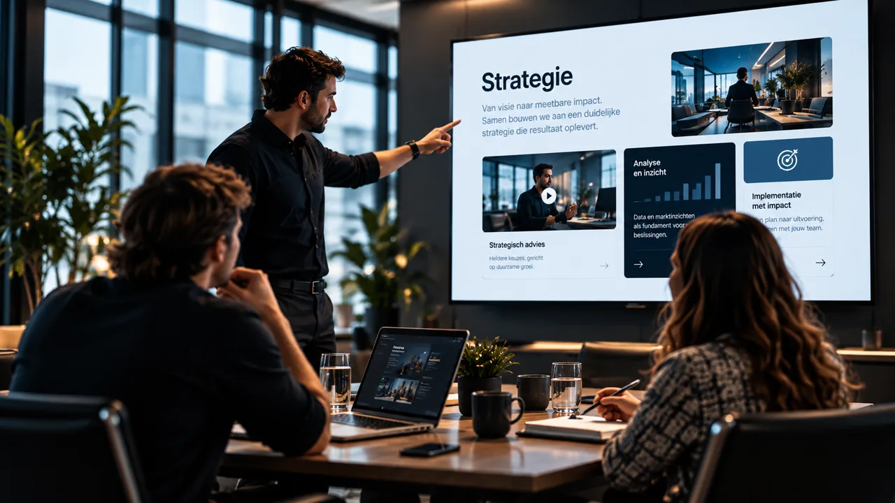

Analyse & strategie
We brengen doelen, processen, doelgroep en systemen in kaart en bepalen waar de meeste waarde te winnen is.
Van intelligente AI Agents tot hoogwaardige websites, maatwerksoftware, automatisering, marketing en slimme NFC-oplossingen.

Beweeg over het beeld · Liquid interaction
Technologie moet geen extra complexiteit toevoegen. Het moet tijd besparen, processen vereenvoudigen en nieuwe mogelijkheden creëren.
Daarom kijken we verder dan losse tools of een eenmalig project. We verdiepen ons in uw organisatie en bouwen oplossingen die daadwerkelijk onderdeel worden van uw bedrijf.Geen losse onderdelen, maar oplossingen die elkaar versterken — van eerste klantcontact tot uitvoerende AI Agent.

Intelligente agents die informatie verwerken, acties uitvoeren en complete bedrijfsworkflows ondersteunen.

AI-gedreven ondersteuning voor sales, service, backoffice, marketing en interne processen.

Strategisch ontworpen digitale omgevingen die uitstraling, snelheid en conversie combineren.

Maatwerksoftware en workflows waarmee handmatig werk plaatsmaakt voor efficiënte processen.

Creatieve en datagedreven groei waarin strategie, content, technologie en conversie samenkomen.

Eén tik leidt naar contactgegevens, content, een afspraak en nieuwe commerciële mogelijkheden.
Een goede digitale oplossing eindigt niet bij een mooi scherm. Iedere stap draagt informatie over aan de volgende.
Helder, beheersbaar en gebouwd rond meetbare waarde.
We brengen doelen, processen, doelgroep en systemen in kaart en bepalen waar de meeste waarde te winnen is.
Strategie wordt vertaald naar een duidelijke ervaring, workflow en technische structuur.
We bouwen de oplossing en verbinden waar nodig databronnen, applicaties en bestaande systemen.
We controleren werking, gebruikservaring en uitzonderingssituaties voor een zorgvuldige implementatie.
We analyseren gebruik en ontwikkelen verder waar dat aantoonbaar nieuwe waarde toevoegt.

Website, AI-kwalificatie, CRM en opvolging werken samen in één schaalbare flow.

Eerst het bedrijfsprobleem scherp. Daarna pas de techniek die het daadwerkelijk oplost.
Specifieke agents ondersteunen sales, klantenservice, backoffice en marketing.
Een fysieke tik opent het profiel, slaat contact op en registreert een commerciële kans.
We starten ieder traject met drie vragen: wat wilt u bereiken, wat houdt uw organisatie tegen en welke oplossing levert daadwerkelijk waarde op?
Met een analyse van uw doelen, processen en huidige systemen. Pas daarna bepalen we of AI, software, design, marketing of een combinatie daarvan de juiste route is.
Ja. We ontwerpen agents rond de informatiebronnen, applicaties en regels die uw organisatie al gebruikt, inclusief passende controle- en goedkeuringsmomenten.
Zeker. We kunnen verbeteren, koppelen of gefaseerd vervangen. De oplossing wordt afgestemd op wat al goed werkt en waar groei wordt afgeremd.
Digitale oplossingen zijn nooit echt af. We kunnen gebruik analyseren, optimaliseren en functionaliteit uitbreiden wanneer dat nieuwe waarde oplevert.